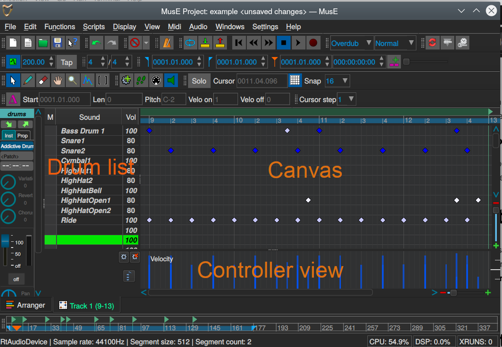

Editor de percusión
El editor de percusión de MusE sigue el diseño del editor de matrices, que es muy común en los editores MIDI y, como el pianoroll, consta de tres partes diferentes. Para el editor de percusión son:** lista de percusión** (drum list), área de trabajo (canvas) y vista del controlador (controller view).

Controladores
Este funciona exactamente igual que los controladores del pianoRoll.
Área de trabajo de percusión (Drum canvas)
El Área de trabajo de percusión funciona de manera similar al Área de trabajo de Piano Roll, aunque no idéntica. Para empezar, todas las notas en el Drum Canvas son pequeños diamantes (generalmente azules) y casi siempre se colocan exactamente en las líneas verticales. Al igual que en el Piano Roll, se colocan en las líneas horizontales, pero las líneas horizontales no representan las teclas del piano, sino un sonido de percusión único como se define en la lista de percusión. Cada parche de la batería esta asignado a una nota, pero no sigue grados sucesivos como en los otros instrumentos.
Lista de percusión
no text here#
Modo cursor
no text here
Barra de herramientas de Pianoroll
Funciona igual que la Barra de herramientas de Pianoroll
Snap
no text here
Cuantización
no text here
Mapa de percusión
no text here